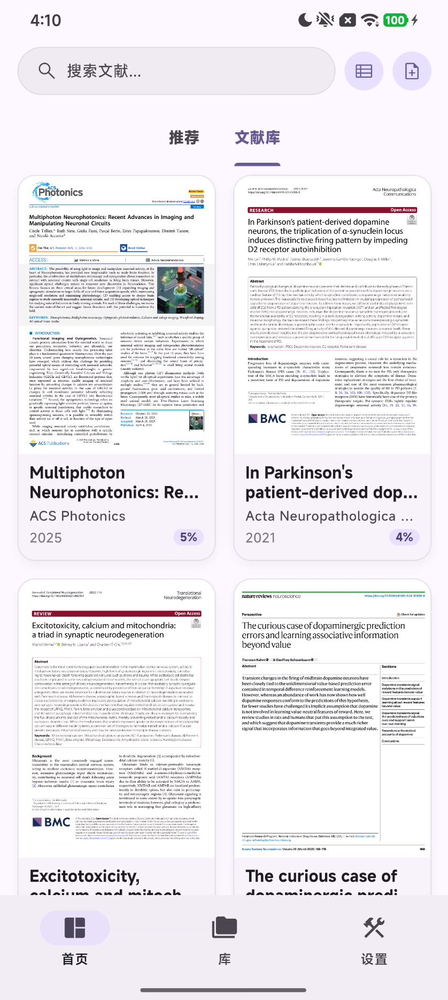

把图片型 PDF 还原成结构化 Markdown——标题、正文、公式、表格各归各位，复制即用，无需重排。



左侧是上传的 PDF 原件，右侧是带版面标注的 Markdown 识别结果。为防止恶意流量，上传与识别前需校验 PaddleOCR API Key。
支持图片型 / 扫描型 PDF，单文件 ≤ 50 MB
需要批量识别 / API 接入？前往 ocr.otterpad.site 完整版 ↗
PaddleOCR 版面分析引擎，理解一页论文里每一块内容的角色与阅读顺序。
印刷与手写混排、多语种文本，逐字坐标级还原，复杂背景也稳。
自动区分标题 / 正文 / 公式 / 表格 / 图注，并按真实阅读顺序重排。
结构化输出，公式转 LaTeX、表格转管道语法，可直接导入 OtterPad 阅读。
识别完的 Markdown，直接流进 OtterPad——一个为科研阅读打造的文献空间。